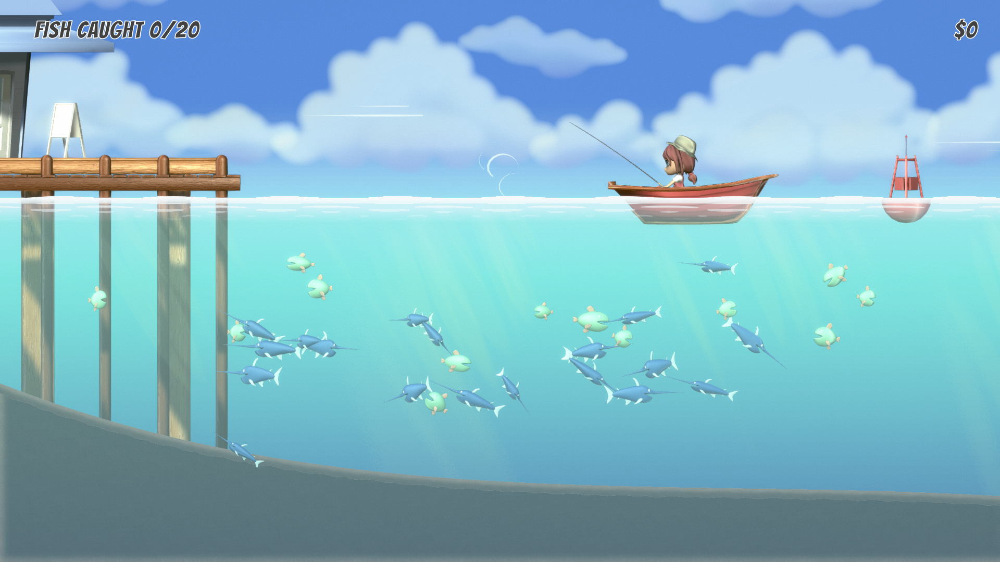
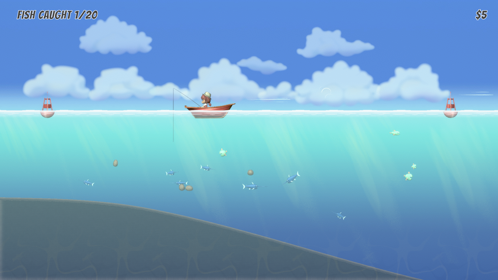
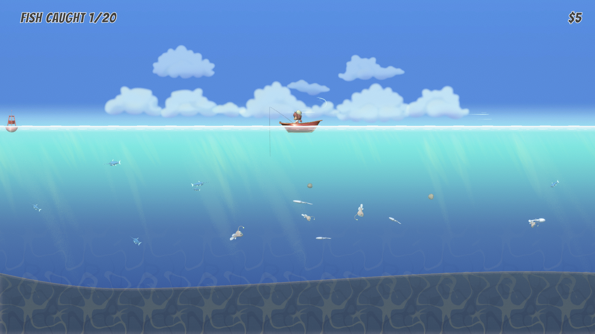

Gone Fishing is a relaxing game created in Unity Engine.
This project was created mostly by me with some audio provided by a friend. The objective with this project was to make a relaxing game that doesn't really have any pressure or urgency.

The goal of the game is to upgrade your fishing capabilities. You start out with a small fishing line that doesn't have much attraction to it. The number of fish you can hold isn't that high. So you stick to the starting zone and cast your line. Each fish you catch has a value. You return to the dock and sell the fish to get currency to buy upgrades for your equipment.

As you continue to get upgrades, you can go further and further out. The screen zooms revealing a larger area, deeper waters, and different fish.

Some fun parts of this project included the procedural water with basic physics, the procedural ground based on a curve, the water shader that gets darker the deeper you go and the fish behaviors.